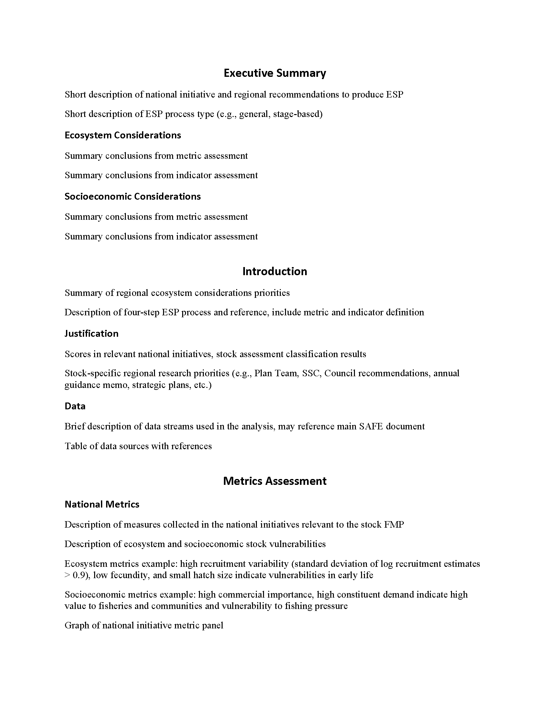
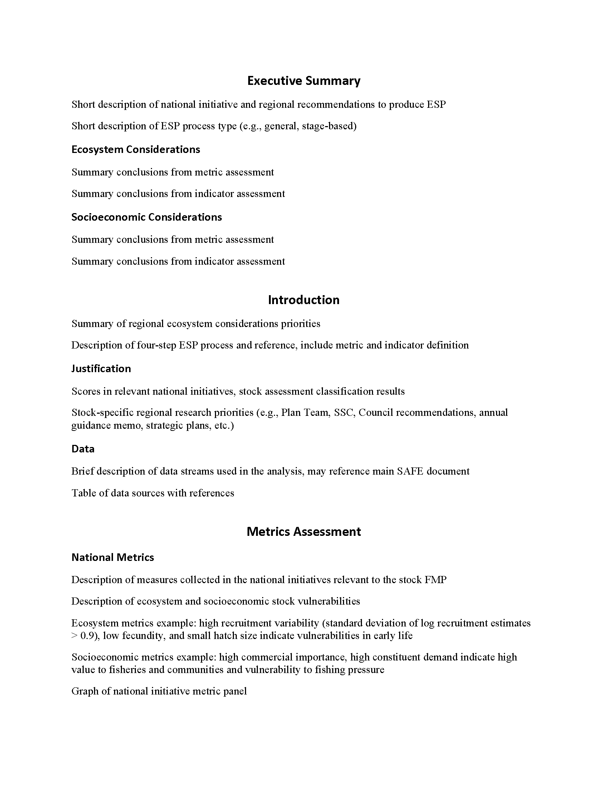

2.3 Full and partial ESPs
2.3.1 Create your template
The AKesp::create_template function creates an ESP template at the specified path. I strongly suggest using the here package to reference file paths.
AKesp::create_template(path = here::here(), type = "full")
2.3.2 Create your content
Put all figures in the
imagesfolder (.png or .jpeg format) and fill outfigure_spreadsheet.csv. Enter figures into the spreadsheet in the order you want them to appear.Put all tables in the
tablesfolder (.csv format) and fill outtable_spreadsheet.csv. Enter tables into the spreadsheet in the order you want them to appear.Put all your references in the
references_spreadsheet.csv, following the example format. Areferences.bibfile will be created and used to compile your in-text references and literature cited section.Edit
...-esp-text-template.docx(can be done on Google Drive and then downloaded). Remember to follow markdown formatting syntax for tables, figures, and references using keywords from the respective spreadsheets.
2.3.3 Create the ESP
Finally, use AKesp::render_esp to generate your ESP from the template content.
2.3.4 Example full ESP
After creating a full ESP template, running AKesp::render_esp with the default parameters will produce an example ESP. However, since AKesp needs to be loaded locally, the directory with your ESP template needs to be specified relative to the AKesp folder. Once AKesp can be installed from Github, this will no longer be necessary, and here::here() can be used instead.
AKesp::render_esp(
dir = here::here(),
ref_spreadsheet = here::here("references_spreadsheet.csv"),
tab_spreadsheet = here::here("table_spreadsheet.csv"),
fig_spreadsheet = here::here("figure_spreadsheet.csv")
)
 



2.3.5 ESP parameters
To see the parameters that can be changed for the ESP:
?AKesp::render_esp()